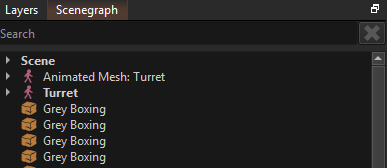

Object Paths
Components often need to interact with other objects, not just the object that they are attached to. In this case, it is usually desirable for the user to be able to specify which object it should interact with.
There are multiple ways how a component may expose this option. For example, some components use object references.
Another option are object paths. These are simply strings, but are used similar to file system paths to search for an object.
IMPORTANT
If an object path references an object by name, make sure that the object has that name. The editor automatically displays names for objects for easier navigation, but the objects do not have those names unless you set it in the properties. Objects with custom names are shown with bold text in the scenegraph, whereas objects with standard text, do not have any name.

In the image above only the objects named Scene and Turret actually have a name that can be used to identify them. The other objects are in fact unnamed.
Object Path Syntax
The syntax for object paths is as follows:
Path pieces are separated by forward slashes (
/).If the path starts with
G:then it will search for an object via a global key.- For instance,
G:keynamewill search for an object with the global key keyname. - If no such object exists, the search fails. Otherwise the found object becomes the reference object for the remainder.
- For instance,
If the path starts (or continues) with
P:it will search upwards the object hierarchy to find the closest parent object that has the requested name.- For instance,
P:parentnamewill check the current object's name for parentname, if it doesn't match, it checks the parent object, and so on, until it finds an object, or fails because no such named parent exists.
- For instance,
If the path starts (or continues) with
../the search will go to the parent object of the current object.- This is repeated for every occurrance of
../. - The search fails, if there are not enough parent objects.
- This is repeated for every occurrance of
If the path starts (or continues) with a relative path (e.g.
a/b) it then searches for any direct or indirect child calledaand below that a direct or indirect object with nameb.- This reports the first match that it finds. If the path is ambiguous, it is undefined which object gets used.
IMPORTANT
When using a global key, make sure that the target object indeed has that global key. Object names and global keys are two separate things and it is easy to set one, when you meant to set the other.
Example Paths
..-> returns the parent of the current object (one level up)../..-> starting at the current object, goes two levels upG:player-> search for the object with the global key playerP:root-> starting at the current object searches for the parent object called roothead/camera-> starting at the current object searches for a child object called head and from there searches for a child object called cameraG:door1/P:frame-> uses a global key to find the door1 object and from there gets the parent object called frameG:door1/..-> uses a global key to find the *door1() object and returns its parent objectP:root/obj2-> starting at the current object searches for a parent called root and from there searches for a child object called obj2
Invalid Paths
P:name/G:key->G:must be the first part of the string.obj/../->..can only appear at the beginning of the relative pathobj/P:name->P:must be at the very beginning or directly afterG:
C++ Code
In C++ code the function ezWorld::SearchForObject() is used to find an object through an object path. For relative paths to work, a reference object has to be passed in. Optionally, the code may also request to only find objects which have a specific component attached.